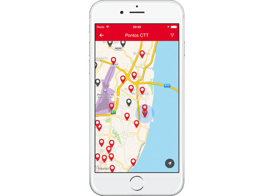
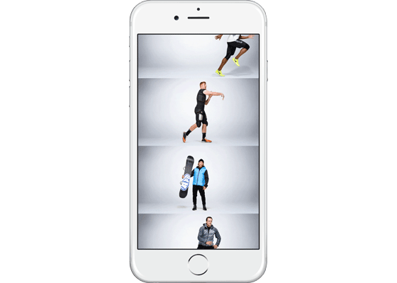

Quodis plans, designs and develops digital projects with award-winning excellence by choosing the best people, technologies and methods.
Selected work


- 
CTT Site, App
Quodis planned and executed a consistent, simple and future-ready UX and design system. In consultation with all stakeholders at the Portuguese Post.
Observador
Fastest growing digital newspaper in Portugal. Launch strategy, UX, Design, Hiring, Team management, Front-end, infrastructure and open source CMS.
Firefox Twitter Party
For Mozilla, an interactive JavaScript visualization. Avatars of #fx4 tweets compose the logo in real-time. Concept, Design, Front-end and Back-end.


- 
Nike Base Layer
In partnership with Feral, Quodis designed the Three.js animation and executed the front-end development for Nike's Base Layer product launch.